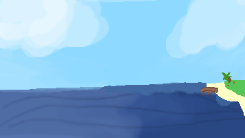
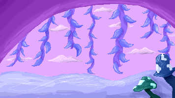
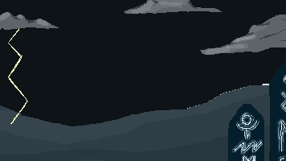
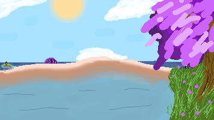

The Ocean

The ocean is the ocean. A vast expanse of water that seems to never end. Who knows what lurks in the depths.
The Hidden Cove

The Hidden Cove is a mystical biome, its location only known to a few. Light blue vines hang from the mouth of the cove, mushrooms glow softly in the night light. The Cove is considered one of the most peaceful places out on the sea.
The Ancient Sea

The Ancient Sea, one of the most dangerous and mysterious biomes. Little is known about the Ancient Sea, except the fact that it harbours primordial and ominous beings. Rumour has it that when night falls, it awakes. The looming presence of it can petrify any seasoned sailor. The weather of the Ancient Sea is…abnormal to say the least. It’s always cloudy, and lightning strikes constantly. You never get to see the sun…if there even is a sun. Runes have been seen in the distance, flashing ancient symbols. Whether it is a warning or something else, we may never know.
The Floating Islands

The Floating island is a pretty calm and mostly peaceful island that flies very high in the sky. This island holds myths and stories like the constellation fish which can show the history of each and every fish. There might be some fish that may seem a little scary like the cerberus fish. However, he's very nice once you get to know him. You see, all the stories on this island tell a tale that some might not believe in, it might be easier to catch fish if you believe their history.
The Clockwork

An unknown area, never documented before.